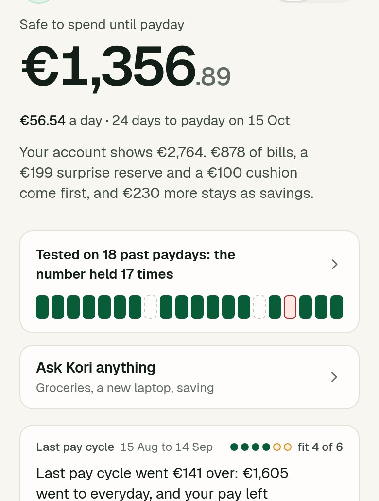
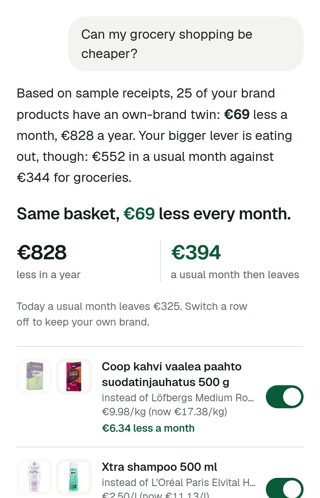
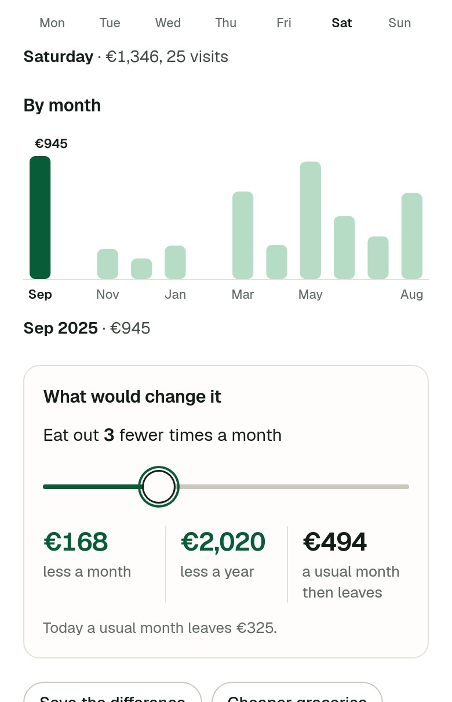
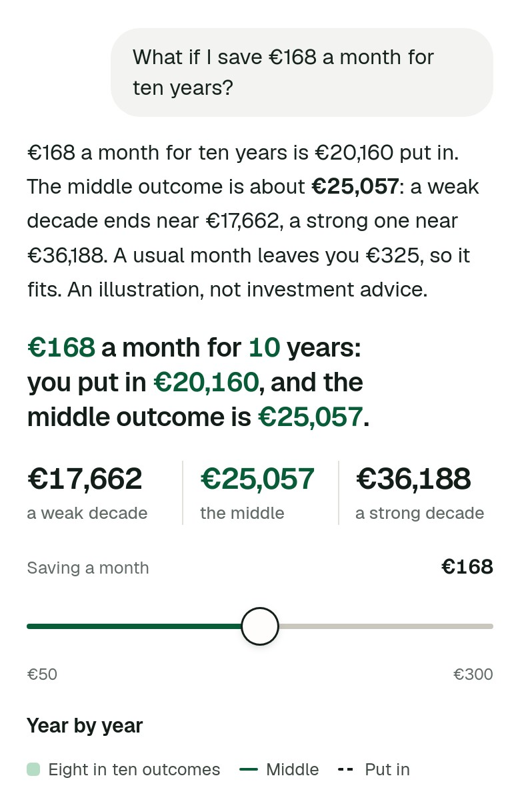
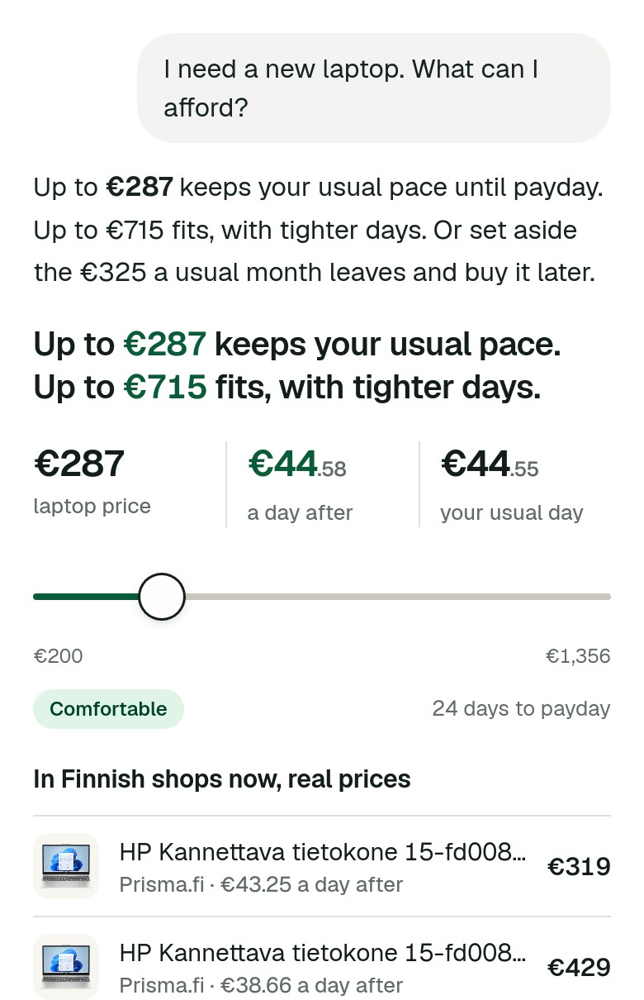
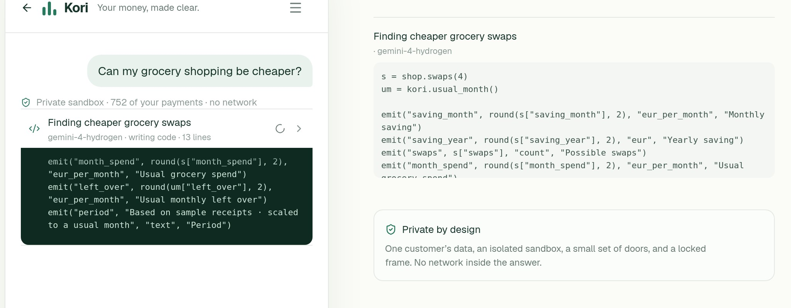
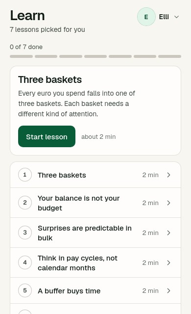
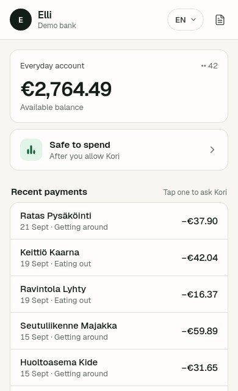
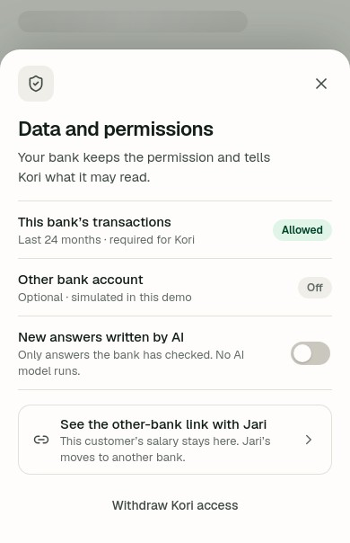

A coach in your bank app. It says what's safe to spend until payday and proves it on your own past. Ask anything and it builds the screen for the answer.

The rest is already spoken for. Kori takes it off before she sees a number, and shows what it took.
€56.54a day, for the 24 days until payday. One screen on her phone.
S-Pankki's challenge data: 106,553 past days from 4,850 customers. On 89,619 of them there was something safe to spend.
In the app Elli replays it on her own past paydays. It held on 17 of 18.




Twenty common questions have code and a screen the bank approved once. They open in about a second and are worked out again on her payments each time.

The work view of the same chat. Customers never see code.


